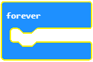

Rad sa blokovima iz kategorija Loops¶
U prirodi postoje procesi koji se neprestano ili s vremena na vreme ponavljaju. Kao i u prirodi, u programiranju je, za rešavanje pojedinih zadataka, neophodno da se neki delovi programa izvrše više puta. Već smo pomenuli da je ponavljanje jedne ili više naredbi (blokova) moćan kocept u programiranju. Kada se neke naredbe programa izvršavaju više puta kažemo da program sadrži ponavljanja (cikluse). Do sada smo, već nekoliko puta, koristili ovaj koncept. Ponavljanje naredbi je vrlo česta pojava u programiranju.
MakeCode sadrži tri vrste blokova u koje se umeću drugi blokovi čije izvršavanje treba da se ponovi:
određeni broj puta:
Ovaj blok treba da koristimo kada unapred znamo tačan broj ponavljanja (kaže se i iteracija).

beskonačan broj puta (neprestano, sve dok korisnik ne zaustavi program):
To je jedan od najčešće korišćenih blokova. Njegovo izvršavanje zaustavlja se klikom na dugme za prestanak rada programa (
).
sve dok ne bude ispunjen određeni uslov:
Ovaj blok treba da koristimo kada ne znamo koliko je puta potrebno izvršiti blokove unutar bloka za ponavljanje i zato želimo da se one izvršavaju sve dok ne bude ispunjen određeni uslov. U blokove ponavljanja se umeću blokovi čije izvršavanje treba da se ponovi.
Blok koji ponavlja blokove (naredbe) tačno određeni broj puta možemo da iskoristimo da reprodukujemo ton C tri puta.
Izgled koda:

Blok za ponavljanje naredbi izvršava se beskonačan broj puta. Njegovo izvršavanje nikada se ne prekida samostalno. Prekidamo ga klikom na dugme za prestanak rada programa ().
Blok koji ponavlja naredbe beskonačan broj puta koristili smo u predhodnim lekcijama kada smo prikazivali animaciju kvadrata.
- U sam blok se mogu dodati novi blokovi, pa nema potrebe da se skripta nastavlja.
- Odgovor je tačan!
- U pitanju je greška u MakeCode-u. Blok za beskonačno ponavljanje naredbi morao bi da ima mogućnost nastavka ređenja skripti.
- Nije tačan odgovor!
- Dalje dodavanje blokova je besmisleno zato što oni nikada ne bi bili izvršeni.
- Nije tačan odgovor!
Q-3: Analiziraj izgled blokova za ponavljanje naredbi. Uočljivo je da blok za beskonačno ponavljanje nema mogućnost povezivanja sa drugim blokovima, na njega se ne može dodati nijedan blok. Zašto?
Blok za ponavljanje blokova (naredbi) izvršava se sve dok ne bude ispunjen određeni uslov. Blokovi unutar ovog bloka izvršavaju se na osnovu ispitivanja tačnosti uslova koji se u blok postavlja. Ovaj blok koristimo kada ne znamo koliko je puta potrebno izvršiti naredbe unutar bloka za ponavljanje i zato želimo da se one izvršavaju sve dok ne bude ispunjen određeni uslov.
- Blok koji ponavlja naredbe tačno određeni broj puta.
- Nije tačan odgovor!
- Blok koji ponavlja naredbe beskonačan broj puta.
- Nije tačan odgovor!
- Blok koji ponavlja naredbe sve dok ne bude ispunjen određeni uslov.
- Odgovor je tačan!
Q-4: Želiš da napraviš program u kome se na ekranu uključuje led diode na poziciji (2, 2) sve dok nivo osvetljenja ne padne ispod određene vrednosti. Koji blok za ponavljanje naredbi ćeš koristiti?
Demonstriraćemo upotrebu ovog bloka tako što ćemo napraviti program koji reprodukuje neku melodiju sve dok je nivo osvetljenja u prosoriji manja od 120.
Za potrebe ovog programa definisaćemo promenljivu  koja će čuvati vrednost očitavanja nivo osvetljenja. Sve dok je vrednost nivoa osvetljenja manja od 120 oglašavaće se zvučni signal.
Na donjoj slici je naš predlog koda programa sa komentarima koji ga pojašnjavaju. Programeri smatraju da je korisno komentarisati skripte i objasniti šta određeni blokovi rade. Кomentarisanjem olakšavamo drugim programerima da razumeju programe koje stvaramo, kao i da ih nadograđuju. Кomentar dodaješ desnim klikom na skriptu i odabirom opcije Dodaj komentar (Add comment).
koja će čuvati vrednost očitavanja nivo osvetljenja. Sve dok je vrednost nivoa osvetljenja manja od 120 oglašavaće se zvučni signal.
Na donjoj slici je naš predlog koda programa sa komentarima koji ga pojašnjavaju. Programeri smatraju da je korisno komentarisati skripte i objasniti šta određeni blokovi rade. Кomentarisanjem olakšavamo drugim programerima da razumeju programe koje stvaramo, kao i da ih nadograđuju. Кomentar dodaješ desnim klikom na skriptu i odabirom opcije Dodaj komentar (Add comment).

Da bismo testirali program pokrećemo ga u simulatoru klikom na dugme  .
.